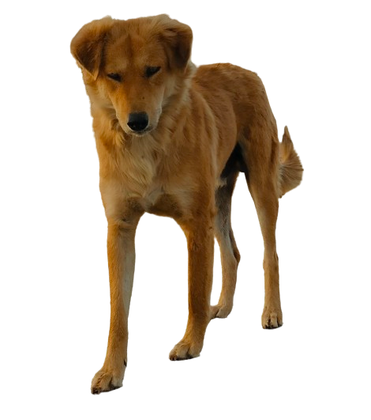
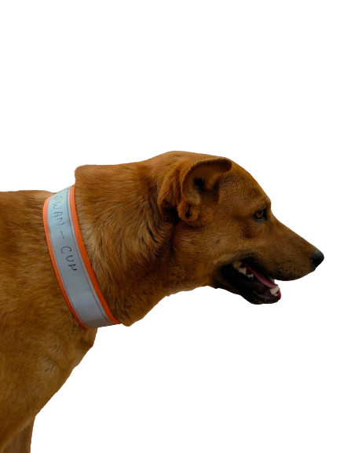
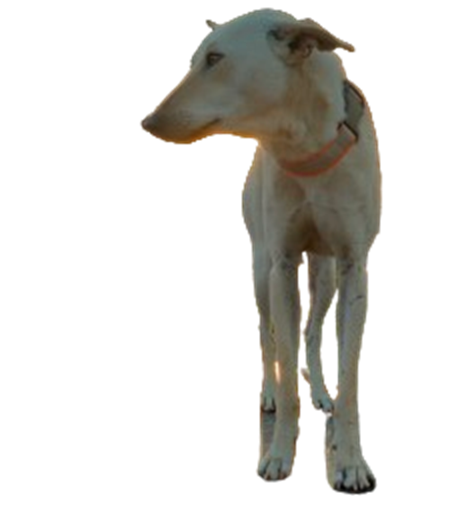

We are the community of passionate individuals dedicated to making a positive impact on the campus of our university .
Contact Us

As passionate nature and animal lovers and dedicated students of our university, we, the members of SWAN (Society for Nature and Animal Welfare), are driven by a profound connection to the world around us.
For us, it's not merely about existing in this ecosystem; it's about thriving within it, coexisting harmoniously with every living being and element that shares our planet. Our journey is one of empathy, compassion, and advocacy, rooted in the belief that every creature, big or small, plays an integral role in the intricate tapestry of life
With every step we take, every initiative we launch, and every heart we touch, we strive to foster a deeper understanding and appreciation for nature's wonders and the welfare of all its inhabitants. Together, let us embark on this journey of stewardship and care, leaving behind a legacy of love and preservation for generations to come.
Vidhyadhanam Sarvadhanapradhanam means "Education is the unrivalled treasure of all." Going along with the university motto, SWAN aims to create a campus where nature and living creatures are cherished and preserved, inspiring a global community passionate about the planet's complex web of life. We aim to create a friendly environment for nature enthusiasts and animal lovers, fostering hope, respect, and responsibility towards the environment. We also strive to promote education and awareness of diverse ecosystems and wildlife.
SWAN is committed to conservation and compassion, focusing on nature safety, flora protection, and equal attention to animals. We aim to provide shelters for animals and provide medical assistance for dogs in India's severe climate change. SWAN also aims for a cleaner environment and encourages volunteers to help workers maintain a hygienic environment. We also focus on identifying green spots and spreading awareness through film screenings, documentaries, photography, and more.
